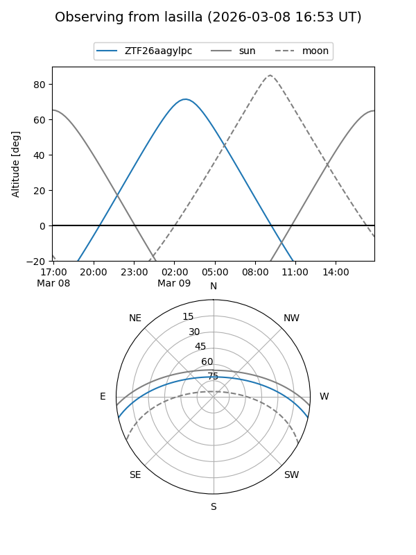
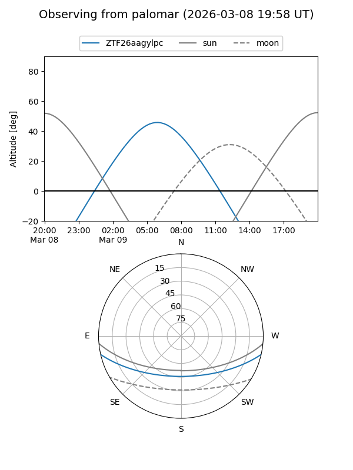

ZTF26aagylpc
Target ZTF26aagylpc at 2026-03-09 07:49
Aliases and brokers:
FINK: link
Lasair: link
ALeRCE: link
alt names
ZTF26aagylpc (ztf,fink_ztf)
Coordinates:
equatorial (ra, dec) = 138.1471,-10.70981
equatorial (HMS+DMS) = 09:12:35.30,-10:42:35.30
galactic (l, b) = (240.8071,+24.86210)
Flags:
Photometry:
last ztfg=18.54
1 ztfg detections
Lightcurve
Visibility


Additional plots